Explain collective behavior
Identify how behavior becomes coordinated outside established routines and formal organizations.
Eleanor’s descendants reach the present and discover that stories, crowds, technologies, institutions, and organized movements can turn shared definitions into social consequences.
Identify how behavior becomes coordinated outside established routines and formal organizations.
Follow an urban legend or rumor from origin through repetition, interpretation, institutional response, and consequence.
Separate documented events, interpretations, sincere beliefs, causal claims, and unfalsifiable assertions.
Use interactionist, conflict, and functionalist reasoning to explain fear, solidarity, movements, and reform.
Eleanor encountered stories through family, church, newspapers, traveling speakers, and face-to-face conversation. Her descendants now encounter them through continuous news, podcasts, group messages, video, recommendation systems, memes, artificial intelligence, and communities that may contain millions of people who never meet. The delivery technology changed, but the sociological questions remain: Who created the definition? Why did it travel? Which values does it protect? Who becomes the hero, victim, expert, outsider, or threat? What becomes real because people act?
Demography is the study of the size, composition, distribution, and change of human populations. Demographers examine births, deaths, migration, age, sex, household structure, and geography. They do not merely ask whether Earth can support a future population; they ask how consumption, technology, inequality, food distribution, public health, gender relations, conflict, climate, and political decisions shape that capacity.
Thomas Malthus argued in 1798 that population could grow geometrically while food supply increased only arithmetically, eventually producing scarcity unless births or deaths checked growth. Neo-Malthusians retain his concern about ecological limits, especially when population, high consumption, climate change, soil loss, water scarcity, and biodiversity decline interact. Critics note that Malthus underestimated agricultural innovation and treated scarcity too narrowly. Hunger can occur amid adequate aggregate food because war, poverty, drought, damaged infrastructure, displacement, pricing, and political power interrupt access and distribution.
Can farms, water systems, soils, fisheries, and climate continue supplying food without destroying regenerative capacity?
Who can afford available food, who controls land and transportation, and why is edible food discarded while people remain hungry?
Fertility commonly falls when child survival improves and people gain education, reproductive autonomy, income security, healthcare, and dependable support in old age.
Rapid growth can strain jobs, housing, schools, transportation, and health systems, but unequal ownership and political exclusion shape who experiences the strain.
The transition is a historical model, not a fixed law or ranking of societies. Countries can follow different pathways, and colonial histories, global markets, public health, gender inequality, conflict, migration, and policy all affect timing. The older label “least industrialized nations” can hide substantial variation and should not be treated as a uniform stage of development.
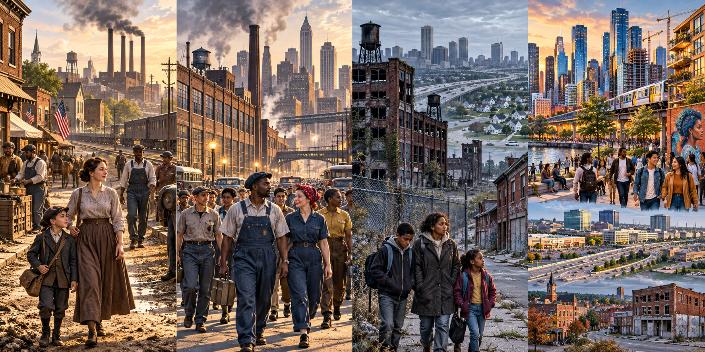
Urbanization is the process by which an increasing share of a population lives in urban areas. Agricultural surplus made early cities possible; industrialization later drew workers into factory centers. Contemporary urban growth also reflects services, education, migration, infrastructure, government policy, displacement, and global investment. In the 2020 Census, 80 percent of the U.S. population lived in urban areas. The definition changed in 2020: an urban area now meets density criteria and contains at least 2,000 housing units or 5,000 people.
A large city whose central city, suburbs, and smaller communities are connected economically, politically, and socially.
Multiple metropolitan areas expand toward one another and become linked through commuting, infrastructure, housing, and commerce.
An urban agglomeration with 10 million or more residents. The United Nations counted 33 in 2025.
Employment, retail, services, and housing cluster outside the old downtown, often around highways and major intersections.
Louis Wirth argued that size, density, and social diversity can weaken kinship-based control and produce segmented, impersonal encounters. Yet city residents also build “smaller worlds” through neighborhoods, workplaces, congregations, schools, cultural communities, mutual aid, and chosen networks. Anonymity can create isolation, but it can also provide freedom, privacy, and room for identities that small communities may constrain.
Herbert Gans described cosmopolites, unmarried or unattached people, ethnic villagers, the deprived, and the trapped. His categories help identify different urban experiences, but they overlap, reflect the language and assumptions of their era, and leave out residents whose lives do not fit a dramatic type. Use them as questions, not permanent labels.
Select any neighborhood and ask: Who came for work, education, culture, safety, family, or anonymity? Who built dense networks of belonging? Who faces constrained choices? Who wants to remain but cannot afford rising costs? Who wants to leave but lacks resources? One person may fit several answers across the life course.
Urban residents often signal civil inattention—recognizing others while protecting privacy—and may use phones or headphones to discourage interaction. The diffusion of responsibility hypothesis predicts that each bystander may feel less personally responsible when others are present. This is not destiny: clear danger, visible need, direct requests, shared identity, trained leadership, and seeing others help can increase intervention.
Suburbanization, discriminatory lending, highway placement, deindustrialization, and the movement of jobs and tax revenue weakened many urban neighborhoods. Redlining denied or restricted credit based heavily on neighborhood location and racial composition. Urban renewal demolished and rebuilt targeted districts, sometimes improving infrastructure while displacing residents and businesses. Gentrification brings reinvestment and higher-income residents into previously disinvested areas; it may improve buildings and services while increasing rents, taxes, cultural displacement, and involuntary moves. Enterprise and empowerment zones use incentives and public investment to attract economic activity, but benefits depend on job quality, resident ownership, affordability, and accountability.
Collective behavior refers to relatively spontaneous, emergent, or weakly institutionalized social activity involving people responding to a shared situation. It can include crowds, rumors, fads, fashions, panics, disasters, public mourning, online cascades, riots, and the early stages of social movements. “Spontaneous” does not mean causeless or irrational. Participants bring learned meanings, networks, emotions, resources, grievances, and expectations into the event.
People publicly express a grievance or demand. A protest may be peaceful, planned, and connected to a longer movement.
A volatile collective event involving destruction or violence. The crowd is not one mind; motives and restraint vary.
A rapidly adopted practice or object that usually fades quickly, often through imitation and visibility.
A socially approved style that changes over time and communicates identity, status, belonging, or distinction.
Unverified information grows when an issue feels important but reliable information is scarce or distrusted.
Collective fear can narrow attention and accelerate behavior, although disaster research also finds extensive helping.
A broader, more durable change in behavior or values, such as repair, reuse, cycling, or plant-rich eating becoming normal.
A plausible story circulated as true that carries a warning, moral lesson, fear, humor, or group identity.
A disproportionate reaction in which a condition, behavior, or group is framed as a major threat to shared values.
Sustained collective action seeking or resisting social change through organization, identity, resources, strategy, and shared claims.
Fads are brief; fashions are changing styles; trends are longer shifts in behavior or values; movements deliberately organize to create or resist change. One event can move between categories as people build organizations, goals, leadership, and strategy.
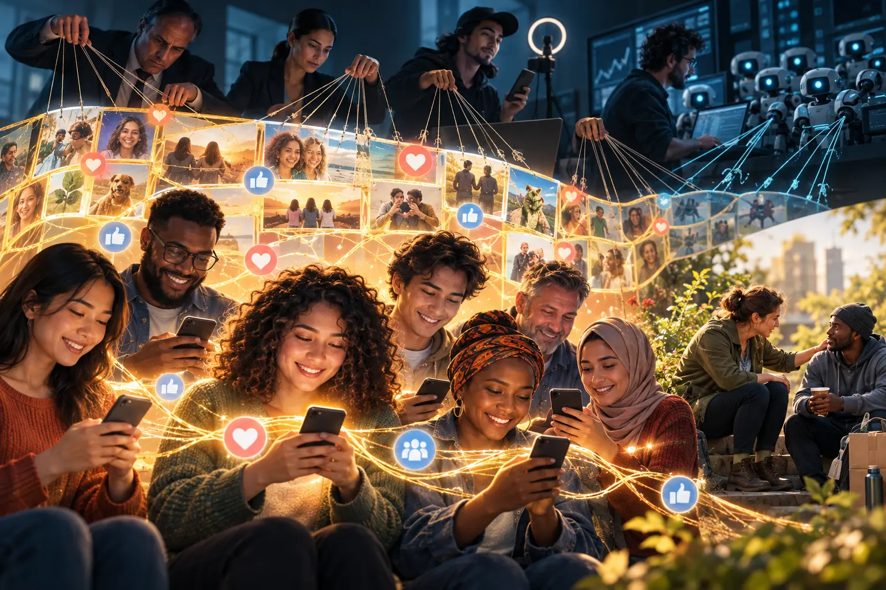
Fictive solidarity is a proposed concept describing a perceived bond based on apparent shared values, identities, grievances, or threats that lacks verified mutual understanding, reciprocal responsibility, or durable cooperation. It does not mean that online relationships are automatically false. A digital community can become genuine solidarity when members provide dependable support, verify information, accept accountability, tolerate good-faith questions, and cooperate over time.
Durkheim could not have observed algorithmically organized social media, influencers, coordinated bot networks, or the modern attention economy. Yet his central question remains useful: what actually connects people strongly enough to support social life? Fictive solidarity extends that question by separating the experience of validation from the reciprocal bonds and obligations that make solidarity durable.
People and organizations with greater money, authority, audience access, data, technology, or institutional credibility can influence which identities and emotions become visible. A political campaign may perform concern to gain votes; a seller may mirror a community’s fear to create demand; an influencer may intensify grievance because engagement produces income; an organization may present selective evidence to protect authority; and a foreign or domestic strategic actor may imitate an ordinary group member to redirect public attention. The manipulation works best when it resembles recognition: someone finally understands people like us.
Power does not mean audiences have no agency. People interpret, question, resist, remix, and leave. It means actors do not enter the communication environment with equal resources or equal ability to repeat a message, conceal sponsorship, target vulnerabilities, or convert attention into institutional outcomes.
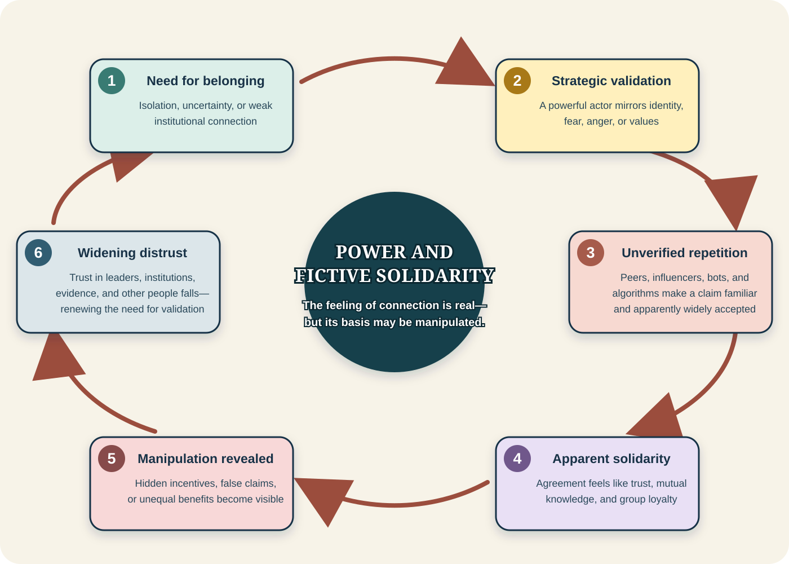
If people expect leaders and institutions to manipulate them, they may withdraw from civic organizations, local journalism, public meetings, professional expertise, or relationships with people outside the in-group. Reduced participation and oversight can then make institutions less representative and less accountable. Closed information networks gain importance, new claims are evaluated through loyalty rather than evidence, and the resulting manipulation appears to confirm the original expectation that no one can be trusted.
Evidence for asking the question: In a 2023 multinational survey, 54% of U.S. adults said they felt close to people in their local community, compared with a median of 78% across 24 countries; among U.S. adults under 30, the figure was 42% (Pew Research Center, 2024). Separate Pew research found that online platforms can sustain close friendships and produce meaningful mutual assistance, but only 5% of U.S. adults said they would be very likely to seek emotional support from an online platform or community (Pew Research Center, 2025). These findings do not prove fictive solidarity. They show why sociology must distinguish visible connection, perceived belonging, dependable support, and durable obligation.
Choose every feature that is clearly present in the group you are studying. Do not score a community from one post; look for repeated practices and evidence.
The result will identify questions for further investigation—not permanently label a person or community.
Safeguard: Use invented names and events. The task is to study the process, not rehearse accusations about real people.
Proposed conceptual extension developed by Caroll Hodgson, 2026.
Early crowd theorists often described crowds as forces that transform individuals. Gustave Le Bon argued that anonymity, suggestibility, perceived invincibility, and emotional contagion could produce a “collective mind” and release behavior normally restrained by social rules. This model captured real possibilities—emotion, imitation, anonymity, and reduced accountability can matter—but it too easily portrays participants as mindless and ignores their different motives, relationships, moral limits, and goals.
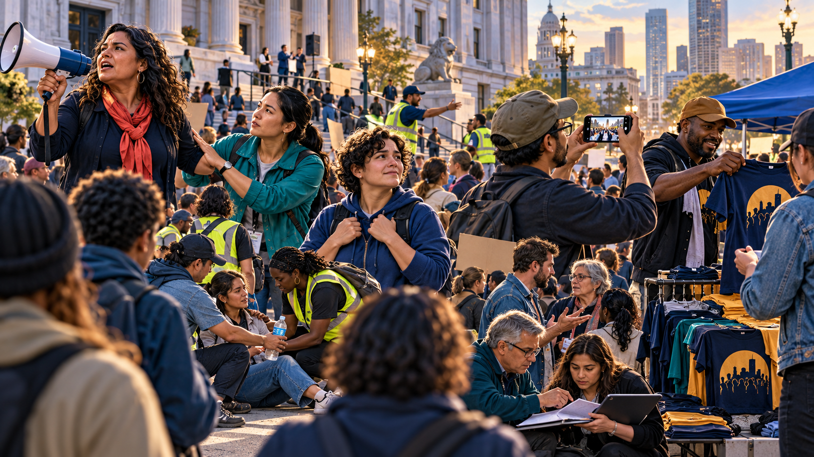
Has a high personal stake and may interpret the event through identity, loss, danger, or deeply held values.
Has a meaningful interest but less personal stake; may provide support, information, care, or restraint.
May seek belonging, protection, certainty, or power from the crowd even without strong prior commitment to the issue.
Comes to watch, learn, record, or experience the event and may encourage or discourage action.
Uses the event for an unrelated purpose, such as selling goods, gaining attention, provoking conflict, or collecting information.
Emotion and visible behavior spread through attention, imitation, arousal, and feedback. Contagion is a process—not proof that reason disappears.
Turner and Killian argued that when established rules do not fit a new situation, participants watch one another and construct temporary expectations for what is appropriate.
Richard Berk emphasized that people weigh anticipated costs and rewards. Police presence, anonymity, group support, risk, moral commitment, and possible success affect choices.
Bring emotion back without removing agency. People can become excited, afraid, angry, hopeful, or grief-stricken and still interpret evidence, follow leaders, protect others, or pursue a goal. Disaster research repeatedly documents cooperation, mutual aid, family protection, and informal coordination alongside confusion or self-protective action.
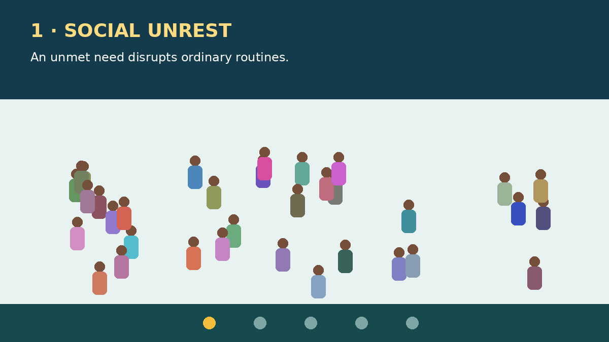
Study the illustration and choose two participants. For each, identify a likely goal, emotion, source of information, anticipated cost, anticipated reward, and norm being followed. Then explain what evidence would change your interpretation. The same visible act can carry different meanings.
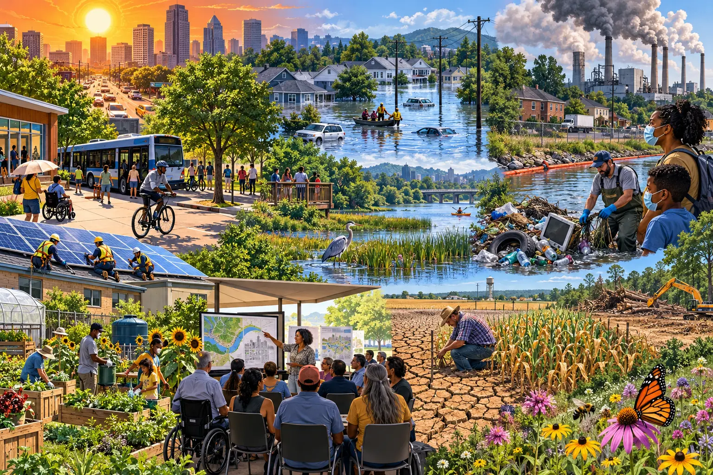
Human societies exist inside ecological systems. Climate change, air and water pollution, plastic and electronic waste, biodiversity loss, soil damage, freshwater stress, extractive production, and urban heat are not separate from sociology. They affect where people can live, whose homes are insured, which jobs are dangerous, who can evacuate, whose neighborhood receives trees or toxic facilities, and which communities have power in public decisions.
Environmental concern did not suddenly begin in 2026. Walt Whitman wrote before Eleanor’s lifetime, while Robert Frost’s career extended through the decades represented in her family story. Their poetry should not be treated as climate research, yet it can be read as evidence of changing cultural awareness. Whitman’s This Compost marvels at the Earth’s power to transform decay, and poems such as Song of the Redwood-Tree also reveal nineteenth-century tensions between expansion and the living world. Frost repeatedly placed woods, farms, brooks, cities, ownership, labor, and loss beside one another. Their work helps students ask when nature became scenery, property, resource, refuge—or a participant in social life.
A validity problem, correction, or failed study should be examined openly. It does not logically invalidate thousands of findings produced through independent temperature records, satellites, ocean measurements, ice and glacier observations, atmospheric chemistry, physical theory, and multiple research teams. Likewise, calling climate change a “hoax” can have real political consequences, but the label does not alter atmospheric chemistry. Natural forces affect climate; the evidence shows that recent global warming is principally human-caused, with natural variability modifying the pattern from year to year and place to place.
Environmental policy is also more complicated than one partisan explanation. Political framing can weaken public support for regulation, but cities may reduce or redesign recycling because of budgets, contamination, unstable commodity markets, infrastructure, participation, or political priorities. Sociology asks how these factors interact rather than assuming one cause explains every local decision.
What institutions must coordinate food, water, energy, housing, transportation, health, and disaster response? Where does cultural lag prevent adaptation?
Who gains from extraction and consumption? Who absorbs pollution, displacement, health risk, and cleanup cost? Whose knowledge counts?
How do words such as “natural,” “disposable,” “clean,” “progress,” or “sacrifice zone” shape what people notice and accept?
Protection is not distributed equally. Race, class, place, occupation, age, disability, and political voice affect exposure and recovery.
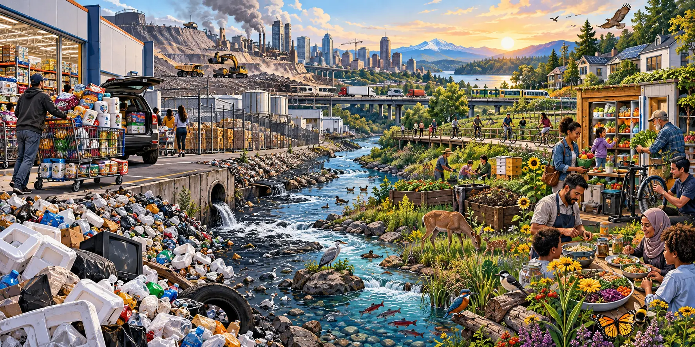
In Daniel Quinn’s novel Ishmael, “Takers” and “Leavers” are literary and philosophical categories, not biological classifications of good and bad people. The contrast challenges a cultural story: must humans take control of the entire living world, expand without limit, and treat every species and resource as available for human use? A Leaver orientation takes what is needed while preserving enough habitat, food, water, diversity, and regenerative capacity for other people, other species, and future generations.
Humans are not uniformly Takers, and other animals are not morally perfect Leavers. Indigenous societies, subsistence communities, religious traditions, farmers, scientists, repair workers, conservationists, and ordinary households have practiced many forms of reciprocity and stewardship. Human behavior also occurs inside systems. A household cannot choose package-free food that is not sold nearby, public transit that does not exist, or repair when manufacturers prevent it.
Buy or prepare realistic amounts, eat leftovers safely, share surplus, compost when possible, repair, reuse, reduce unnecessary packaging, and choose plant-rich meals when workable.
Design smaller portions, donation systems, right-to-repair rules, durable products, refill options, transit, renewable energy, habitat protection, and producer responsibility.
Low-income households often consume less while facing greater pollution and fewer choices. Responsibility should follow both capacity and power.
Stewardship should support nourishment and sustainable habits—not skipping needed meals or treating ordinary human needs as moral failure.
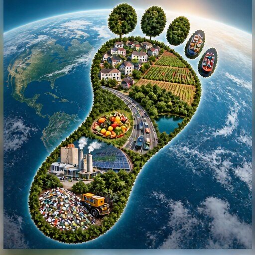
The Global Footprint Network calculator estimates how much biologically productive land and water would be required if everyone lived in a similar way. Treat the result as a learning estimate, not a score of personal worth. Afterward, separate changes you can make directly from changes requiring landlords, employers, manufacturers, utilities, transportation systems, or government.
Open the Global Footprint Calculator
The Yin-Yang is often casually described as “balance,” but its meaning is richer: it represents opposing yet interdependent forces that exist through their relationship with one another. The forces are not simply good against evil, and neither remains fixed. Day becomes night, seasons turn, and each side contains the possibility of change. Even in the darkest season, the symbol suggests that light is present and another season is coming. In a religious or philosophical setting it may be treated as sacred—set apart and connected to ultimate meaning. As a tattoo, decoration, logo, or popular-culture image it can enter the profane realm of ordinary life while still carrying deeply personal value. Context, community, and practice shape which meaning becomes prominent.
In Caroll’s tattoo, the two sides represent two generations of her family: beginning with Caroll and her husband and continuing through the generation that follows them. A generational transition changes who carries major family functions—planning gatherings, cooking meals, caring for others, preserving traditions, and creating new ones—but the family remains the same family. The paw prints and animals reflect another continuity: pets remain present as relatives, responsibilities, and family life change around them.
This interpretation also connects to the Golden Rule, versions of which appear in many religious and secular ethical traditions. Reciprocity does not require people, generations, or social groups to be identical. It asks each side to recognize its relationship to the other and to consider how its choices affect other people. Sociologically, that practice can reduce distrust, exploitation, retaliation, and preventable conflict. Extended to the environment, the same ethical principle includes future generations, other species, and the living systems on which every family depends.
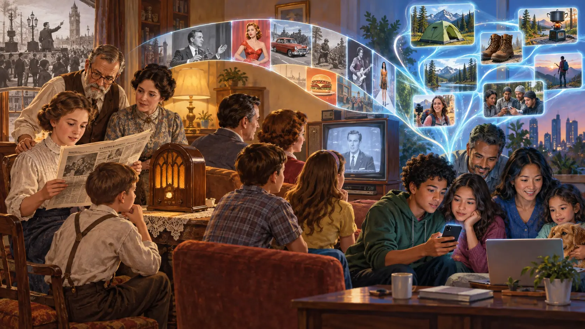
An urban legend is a widely circulated story presented as plausible or true, often attributed to a friend-of-a-friend. Urban legends can warn against danger, enforce a moral lesson, express uncertainty, stigmatize an out-group, or entertain. They change as people retell them and as newspapers, television, film, forums, algorithms, and video make the story visible to new audiences.
The Thomas theorem provides the sociological bridge: when people define a situation as real, it becomes real in its consequences. This does not mean every belief makes its object materially or supernaturally real. It means belief can change attention, emotion, interpretation, relationships, voting, policing, treatment, and behavior. A rumor can therefore cause real fear, accusation, exclusion, spending, investigation, violence, or solidarity even when the rumor’s central claim is false or unverified.
A moral panic develops when a person, group, practice, or story is framed as a major threat to social values; moral entrepreneurs promote the threat definition; media and institutions amplify it; and a folk devil becomes the recognizable target. A real problem can exist beneath a moral panic. The sociological question is whether the evidence supports the scale, cause, accused population, and proposed response.
During the 1980s and early 1990s, claims of vast organized satanic networks committing ritual abuse circulated through media, training programs, religious communities, therapy, and law enforcement. Investigations did not corroborate the claimed nationwide conspiracy. That conclusion does not mean child abuse was imaginary: investigators had to separate evidence of actual abuse or trauma from suggestion, contaminated interviews, mistaken interpretation, and unsupported supernatural narratives.
Damien Echols, Jason Baldwin, and Jessie Misskelley were convicted in 1994 of murdering three children. Occult suspicion, Echols’s appearance and interests, and the surrounding Satanic Panic influenced the public story. The men entered Alford pleas and were released in 2011 while maintaining innocence; the convictions remain legally in place, and later DNA-testing litigation continues. The responsible lesson is not to declare the case solved in a textbook, but to ask whether stereotype displaced physical evidence.
Slender Man began as a fictional internet image in 2009 and expanded through collaborative stories, altered photographs, games, and videos. In 2014 two twelve-year-olds attacked a classmate while describing belief in the character; court proceedings also involved serious mental-health evidence. The case shows that a fictional symbol can have real behavioral consequences. It does not establish that collective belief created a supernatural being.
Some occult traditions use ideas such as a thoughtform, tulpa, or egregore to propose that concentrated individual or collective belief can create or strengthen an entity. Sociology can study who believes this, how the idea circulates, and what people do because of it. Natural science would require observable, reproducible evidence before treating supernatural materialization as an established explanation.
Stories do not need to be invented by one mastermind to serve power. Political organizations, businesses, religious leaders, media producers, activists, and platform algorithms can select, frame, repeat, or monetize narratives. Election campaigns are especially intense periods of agenda setting because complex public values are compressed into a two-party contest. Many people hold cross-cutting views that neither party represents perfectly, and historical secrecy, deception, scandal, and broken promises contribute to distrust. The analytical response is neither automatic trust nor automatic conspiracy: trace the source, evidence, funding, audience, institutional pathway, beneficiary, and excluded alternatives.
Sociologists generally do not expect every difference in income, authority, prestige, skill, or responsibility to disappear. The stronger question is whether inequality is legitimate, limited, permeable, and accountable: Can people meet basic needs? Can they move between positions? Does greater reward correspond to a defensible contribution or burden? Can concentrated power be challenged? Do rules apply consistently? A fairer society must balance equality, liberty, security, motivation, care, and democratic participation rather than maximizing only one value.
An equal tax percentage is a proportional tax; a progressive tax asks higher-income households to contribute a larger percentage because the same percentage does not create the same sacrifice at every income. Students should compare simplicity, ability to pay, avoidance, incentives, and who receives the public return.
Calling a contribution an investment may make reciprocity clearer: people pool risk across many workers and years to support retirement, disability, unemployment, healthcare, or major emergencies. Investment accounts or pooled funds require diversification, low fees, fiduciary duties, public oversight, protection during market losses, and guarantees for people whose wages or caregiving histories are limited.
A society can define healthcare and education as social rights while still debating delivery, taxation, eligibility, cost controls, provider autonomy, and quality. Universal benefits can strengthen solidarity because everyone receives something, but a plan must explain financing and protect access rather than promising cost-free abundance.
Paid work can provide income, identity, routine, skill, contribution, and solidarity. Policy can preserve incentives through fair wages, training, childcare, transportation, disability support, and routes into useful work—without treating unpaid caregiving, study, disability, retirement, or temporary unemployment as absence of human worth.
Removing parties might reduce rigid camps but could also drive coalitions underground and restrict association. Alternatives to test include nonpartisan local elections, ranked-choice voting, open primaries, independent districting, stronger disclosure, and easier access for new candidates.
Public financing or equal spending grants can reduce wealth advantages. Lobbying reform can require disclosure, restrict gifts, slow the revolving door, and give ordinary groups meaningful access. Term limits may reduce entrenchment while also removing expertise and increasing reliance on permanent staff or outside lobbyists.
| Proposal | Possible benefit | Question or unintended consequence to test |
|---|---|---|
| Proportional or progressive taxation | Funds shared institutions and makes contribution predictable. | Who experiences the greatest sacrifice, and which avoidance routes remain? |
| Pooled retirement investment | A large risk pool can build long-term security. | Who bears market losses, manages the fund, and protects low-wage or disabled participants? |
| Universal healthcare and education | Reduces fear and unequal access while expanding capability. | How are costs, capacity, wait times, quality, and professional independence governed? |
| Campaign and lobbying reform | Limits unequal political access and improves transparency. | How are speech, association, public participation, enforcement, and loopholes protected or controlled? |
| Term limits | Creates turnover and reduces long-term entrenchment. | Does power shift to unelected staff, donors, agencies, or lobbyists? |
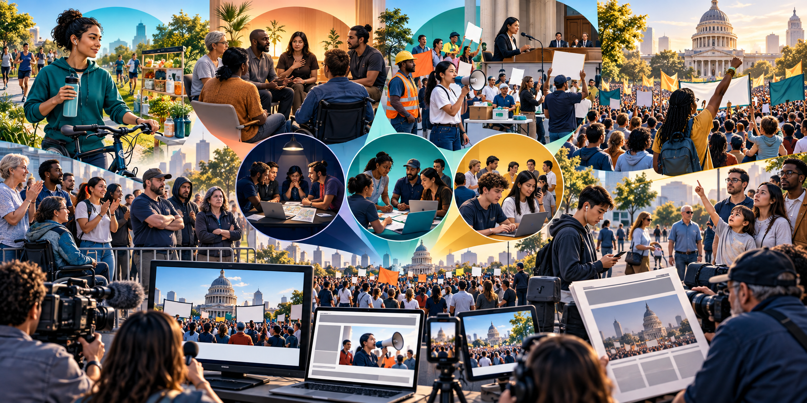
A social movement is a sustained collective effort to create or resist social change. Movements need more than shared frustration. Participants build identity, frame a problem, recruit through networks, mobilize resources, select tactics, communicate with publics, answer opposition, and maintain effort over time.
Seeks limited change in particular individuals—for example, changing one health, consumption, transportation, or study behavior.
Seeks deep, comprehensive transformation of individuals, often through religious, therapeutic, recovery, or identity-based commitments.
Seeks limited change across society, such as changing one law, institution, industry practice, or public norm.
Seeks extensive change across society’s institutions, power relationships, or cultural order.
Millenarian movements anticipate dramatic calamity, salvation, or transformation. Historical cargo movements in the Pacific arose within colonial disruption and unequal exchange; they should not be reduced to people irrationally destroying possessions.
Transnational movements coordinate across borders, including women’s rights, environmental, labor, democracy, public-health, and animal-protection movements. A rare metaformative movement seeks to alter the social order of an entire civilization or world.
Leadership and trusted organizers set goals, schedules, frames, resource plans, and tactical boundaries.
Regular participants contribute labor, knowledge, money, relationships, and public presence without controlling every decision.
People may vote, donate, attend, share information, or join one action while remaining less dependable.
Sympathetic, hostile, unaware, or indifferent publics can become participants, opponents, audiences, or targets of persuasion.
Tactics include education, testimony, lobbying, lawsuits, elections, petitions, mutual aid, boycotts, strikes, vigils, demonstrations, civil disobedience, art, and digital campaigns. Leaders consider ethics, goals, member capacity, public reaction, media visibility, repression, and access to decision makers. Hostility from authorities can increase risk and tactical escalation, but violence is never an automatic response. Institutional access often reduces confrontation while creating another danger: leaders may become more invested in organizational survival than the original grievance.
Family, friends, classmates, coworkers, congregations, and online communities recruit people and make participation feel possible.
People face objectively harmful conditions such as hunger, exclusion, violence, unsafe work, or denial of rights.
People perceive a gap between what they have and what they believe they should have, what others have, or what they previously expected.
Groups accustomed to status or power mobilize when they perceive it declining. The theory helps explain some reactionary movements but should be tested rather than used as a universal label.
People participate because a moral principle, identity, worldview, or sense of duty makes inaction feel unacceptable.
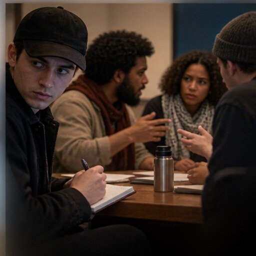
A government, rival group, or other actor may infiltrate a movement to gather intelligence, encourage misconduct, create division, or discredit leadership. Evidence must establish the role; suspicion alone should not be used to excuse a participant’s actions or label every disruptive person an agent.
Choose one local issue: heat, flooding, clean water, transit, waste, habitat, food access, or energy. Identify the movement type, a measurable goal, membership layers, the institution with authority, an ethical tactic, a public you must reach, the evidence required, and one possible latent consequence.
Existing elements are combined into something new. Cars, microchips, or composite materials can reorganize cities, work, warfare, and construction.
People recognize or explain something that already exists. Discoveries—from DNA structure to a mineral deposit—can alter identity, law, medicine, settlement, and power.
An invention, practice, or idea spreads between groups or societies. Air travel, currency systems, contraception, and digital networks produce consequences far beyond their place of origin.
This redesigned process replaces the uploaded table without reusing its image. It also adds a crucial step: institutions and unequal power filter every invention, discovery, and diffusion, so consequences are never automatic or evenly distributed.
William F. Ogburn used cultural lag to describe the delay that can occur when material culture—tools, machines, and technical systems—changes faster than nonmaterial culture such as laws, ethics, norms, education, and institutions. Artificial intelligence, genetic editing, surveillance, and social media all raise the question: can collective rules and judgment catch up with technical capacity?
Tools expand human memory, reach, speed, strength, perception, and coordination.
Automation changes what is made, where it is made, and which skills are rewarded or displaced.
Platforms, monitoring, algorithms, and remote work redistribute knowledge, control, risk, and bargaining power.
Technologies make some futures appear inevitable while hiding the political choices embedded in design.
Devices and digital displays become signs of status, identity, taste, and belonging.
Communication, care, dating, parenting, household labor, privacy, and generational authority are reorganized.
Beginning with European colonial expansion in the sixteenth century—and accelerating with industrialization—powerful states and firms extracted labor and resources from other regions and reorganized their economies around external markets. Dependency theory argues that this history created unequal relationships in which less-industrialized countries were pushed toward supplying cheap labor and raw materials while wealthier “core” countries captured more profit and decision-making power. The theory illuminates durable inequality, although countries retain agency and have followed varied paths.
Current tensions include disagreement within the G7, China’s growing power, Russia’s invasion of Ukraine and its energy and resource influence, unresolved Cold War legacies, and ethnic or nationalist conflicts. Africa must not be treated merely as a reserve of resources: its states, regional organizations, businesses, and young populations are consequential actors in climate policy, trade, technology, security, and global governance.
Choose a phone, electric-vehicle battery, shirt, coffee bean, or solar panel. Map where its raw materials originate, who owns each stage, where value is added, whose labor and environment carry the risks, and where the profits accumulate. Which relationships look dependent—and where do local actors exercise power?
Environmental sociology studies the two-way relationship between society and the natural environment: institutions, inequality, culture, population, technology, and production transform ecosystems, while environmental conditions shape health, migration, conflict, work, and everyday life.
Human beings depend on other species, soils, water, climate systems, and cycles that no economy can replace completely.
Actions taken for growth, convenience, security, or profit can create pollution, habitat loss, waste, and risks no actor intended.
Economic expansion requires energy and materials. Extraction and disposal can undermine the ecological systems on which further production depends.
Governments can encourage capital accumulation and environmental harm—or set rules, invest, redistribute risk, and protect public goods.
The treadmill of production links competitive growth, resource extraction, production, consumption, and waste. The burdens are unequal: less-industrialized countries and low-income communities often face pollution and climate risks created disproportionately by wealthier consumers and firms. Profit seeking is a powerful driver, but outcomes also reflect public policy, technology, consumption, inequality, and collective resistance. Environmental problems are therefore social problems—and solving them is essential to human welfare.
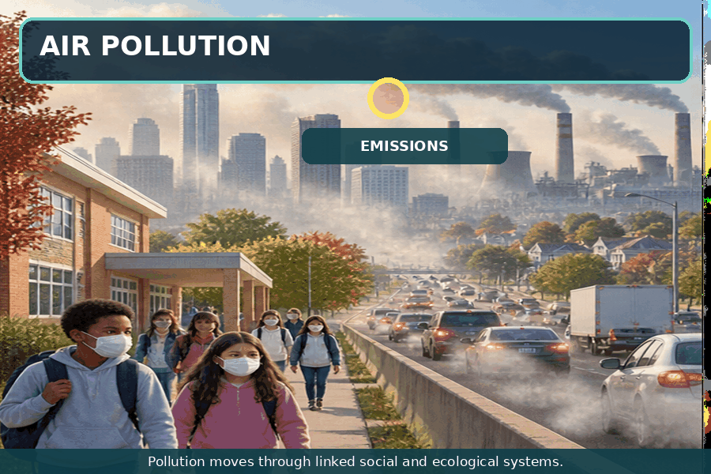
Vehicles, power generation, industry, fires, and other sources release gases and particles. Wind and atmospheric conditions move them across boundaries, while housing, occupation, age, health, and political power shape exposure.
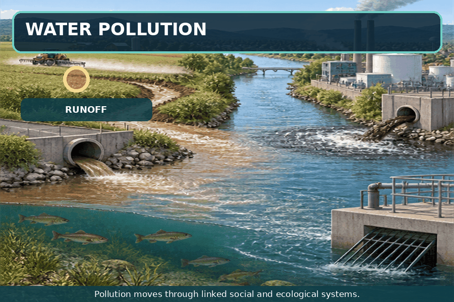
Runoff, sewage, industrial discharge, mining, plastics, and heat can move through an entire watershed. Pollution released upstream becomes a health, food, ecosystem, and public-infrastructure issue downstream.
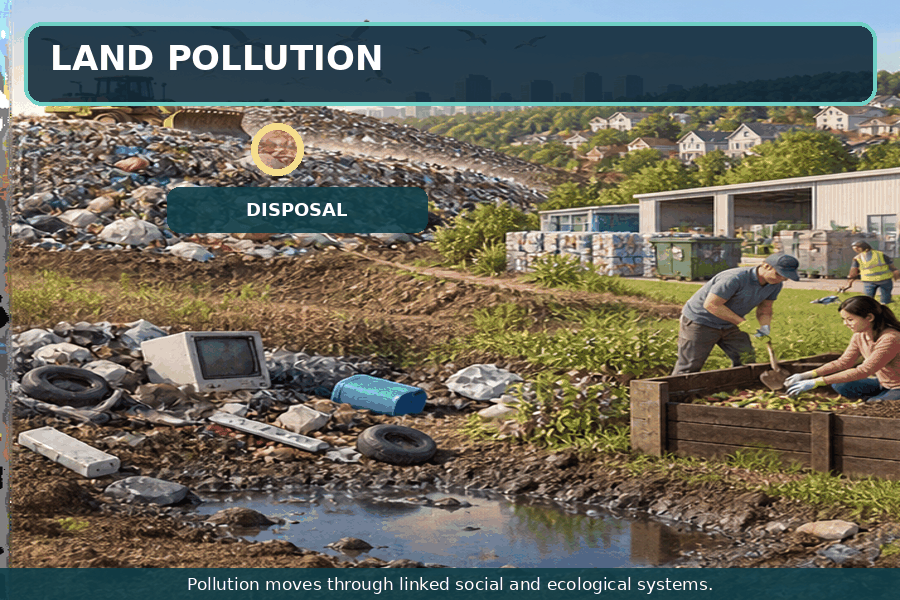
Solid waste, hazardous chemicals, electronic waste, extraction, and poorly managed disposal contaminate soil and water. Repair, reuse, composting, safe recovery, producer responsibility, and reduced material use intervene earlier in the system.
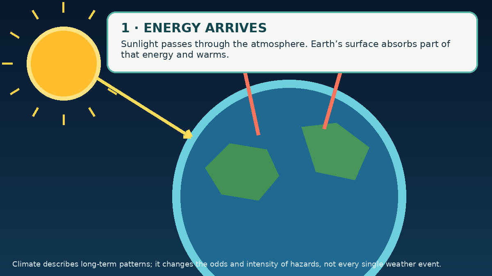
Burning fossil fuels and some forms of industrial agriculture release greenhouse gases. Deforestation and land degradation also release stored carbon and weaken natural carbon uptake by forests and soils. Oceans and living systems continue absorbing carbon, but not fast enough to offset human emissions. The added heat raises average temperature, melts land ice, expands seawater, and changes long-term weather patterns. Depending on region, this increases the likelihood or severity of extreme heat, wildfire-conducive conditions, heavy precipitation, drought, coastal flooding, and other hazards. Climate change alters risks; it does not mean every individual weather event has one cause.
Earth systems continually respond to disturbance, but “balance” does not guarantee a return to conditions favorable to human societies. Ecosystems can reorganize, species can disappear, coastlines can move, and feedback loops can lock in changes for centuries. The planet will continue changing; the sociological and ethical question is whether people will protect the conditions that allow human and nonhuman communities to flourish.
“The environment will respond and reorganize. Our hope—and our responsibility—is that human beings do not make themselves the condition the living world must correct.”
—Caroll’s closing reflection
Propaganda is strategically presented information intended to influence attitudes or behavior. The term does not automatically mean every claim is false. A message becomes analytically important when it selects evidence, attaches emotion, borrows authority, simplifies choices, or hides whose interests it serves. Social-movement leaders, governments, corporations, advocacy groups, political campaigns, and opponents all attempt to shape public definitions.
Attaches a negative label so the audience rejects a person or idea without examining evidence.
Uses admired but vague values—freedom, security, family, progress—without explaining the policy or tradeoff.
Moves the prestige, fear, or symbolism of one object or institution onto another claim.
Uses a celebrity, expert, ordinary witness, or respected figure to endorse a conclusion.
Presents a leader, product, or movement as naturally aligned with “ordinary people.”
Selects favorable facts and omits inconvenient evidence, uncertainty, costs, or alternatives.
Suggests that everyone is joining, winning, buying, or believing—and that the audience should too.
“Everyone in your neighborhood has already joined. Do not be the last family left behind.”
Choose the technique that best explains the message.
Mass media can act as gatekeepers by deciding which movements receive attention, which spokesperson appears, what images lead, which history is supplied, and whether an event is framed as protest, disruption, public safety, disorder, or democratic participation. Avoid assuming that every unfavorable report proves conspiracy or that every sympathetic report proves accuracy. Compare outlets, original documents, camera angles, quoted voices, omitted groups, ownership, incentives, and evidence.
Imagine one story emphasizes blocked traffic and property damage while another emphasizes the grievance and peaceful majority. Identify what each includes and omits. Then write a third headline and opening paragraph that reports the verified event, separates peaceful participants from unlawful acts, and gives readers enough context to evaluate the movement’s claim.
You have 20 seconds per headline. Decide whether the wording primarily reports verifiable information or pushes the reader toward a judgment.
Headline 1 of 6
Press “Start game” when you are ready.
Look for loaded adjectives, assumptions about motives, missing attribution, and language that treats an opinion as an established fact.
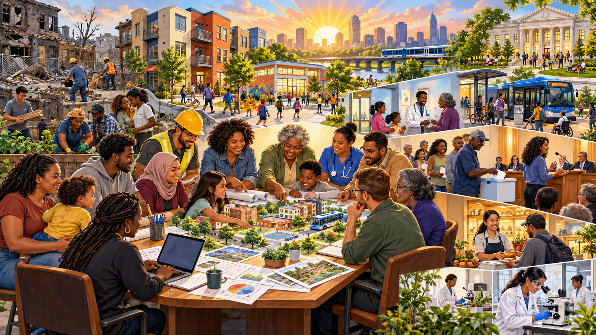
Songs are cultural objects rather than research findings. They can still reveal public claims, emotions, group boundaries, and conflicts over whose experiences receive recognition.
Listen sociologically: Which statements about incarceration, drug policy, punishment, and political priorities are empirical claims? What evidence would test them?
Listen sociologically: How do citizenship, authority, enforcement, group boundaries, and collective identity shape the conflict?
demography · fertility · mortality · migration · Malthus theorem · demographic transition · population aging · population decline
urbanization · metropolis · megalopolis · megaregion · megacity · edge city · redlining · urban renewal · gentrification
crowd · protest · riot · fad · fashion · rumor · panic · social trend · emergent norm · minimax · acting crowd
ecological footprint · biocapacity · climate change · biodiversity · environmental justice · stewardship · treadmill of production
Gemeinschaft · Gesellschaft · social revolution · modernization · invention · discovery · diffusion · cultural lag
means of production · class conflict · dependency theory · core and periphery · G7 · colonialism
urban legend · Thomas theorem · moral panic · moral entrepreneur · folk devil · framing · agenda setting
alternative · redemptive · reformative · transformative · millenarian · transnational · metaformative · mobilization
networks · absolute deprivation · relative deprivation · declining privilege · ideological commitment · agent provocateur
name calling · glittering generality · transfer · testimonial · plain folks · card stacking · bandwagon · media gatekeeping
Associated Press. (2024, April 18). Arkansas Supreme Court says new DNA testing can be sought in West Memphis Three case. AP News. https://apnews.com/article/31cf362ca7ca74219109c41cb341f043
Goddard, I., & Parker, K. (2025, January 16). Where men and women turn for emotional support and social connection. Pew Research Center. https://www.pewresearch.org/2025/01/16/where-men-and-women-turn-for-emotional-support-and-social-connection/
Pew Research Center. (2024, May 8). Americans are less likely than others around the world to feel close to people in their country or community. https://www.pewresearch.org/short-reads/2024/05/08/americans-are-less-likely-than-others-around-the-world-to-feel-close-to-people-in-their-country-or-community/
Dropkick Murphys. (2026). Citizen I.C.E. [Music video]. YouTube.
Chess, S. (2012). Open-sourcing horror: The Slender Man, marble hornets, and genre negotiations. Information, Communication & Society, 15(3), 374–393. https://doi.org/10.1080/1369118X.2011.642889
Cohen, S. (2011). Folk devils and moral panics: The creation of the Mods and Rockers (3rd ed.). Routledge. (Original work published 1972)
Gans, H. J. (1962). The urban villagers: Group and class in the life of Italian-Americans. Free Press.
Denault, V., Plusquellec, P., Jupe, L. M., St-Yves, M., Dunbar, N. E., Hartwig, M., Sporer, S. L., Rioux-Turcotte, J., Jarry, J., Walsh, D., Otgaar, H., Viziteu, A., Talwar, V., Keatley, D. A., Blandón-Gitlin, I., Townson, C., Deslauriers-Varin, N., Lilienfeld, S. O., Patterson, M. L., … van Koppen, P. J. (2020). The analysis of nonverbal communication: The dangers of pseudoscience in security and justice contexts. Anuario de Psicología Jurídica, 30(1), 1–12. https://doi.org/10.5093/apj2019a9
Lanning, K. V. (1992). Investigator’s guide to allegations of “ritual” child abuse. National Center for the Analysis of Violent Crime, Federal Bureau of Investigation. https://www.ojp.gov/ncjrs/virtual-library/abstracts/investigators-guide-allegations-ritual-child-abuse
Global Footprint Network. (n.d.). Ecological footprint calculator. https://www.footprintcalculator.org/
Frost, R. (1923). A brook in the city. In New Hampshire. Henry Holt.
Intergovernmental Panel on Climate Change. (2023). Climate change 2023: Synthesis report. https://www.ipcc.ch/report/ar6/syr/
Marx, K., & Engels, F. (1848). Manifesto of the Communist Party.
Malthus, T. R. (1798). An essay on the principle of population. J. Johnson.
National Aeronautics and Space Administration. (n.d.). Causes of climate change. https://science.nasa.gov/climate-change/causes/
Ogburn, W. F. (1922). Social change with respect to culture and original nature. B. W. Huebsch.
Quinn, D. (1992). Ishmael. Bantam/Turner.
System of a Down. (2001). Prison song [Song]. On Toxicity. American Recordings & Columbia Records.
Treen, K. M. d’I., Williams, H. T. P., & O’Neill, S. J. (2020). Online misinformation about climate change. WIREs Climate Change, 11(5), e665. https://doi.org/10.1002/wcc.665
Thomas, W. I., & Thomas, D. S. (1928). The child in America: Behavior problems and programs. Alfred A. Knopf.
U.S. Census Bureau. (2023). 2020 Census urban areas facts. https://www.census.gov/programs-surveys/geography/guidance/geo-areas/urban-rural/2020-ua-facts.html
United Nations, Department of Economic and Social Affairs. (2022). A world of 8 billion. https://desapublications.un.org/policy-briefs/un-desa-policy-brief-no-140-world-8-billion
United Nations, Department of Economic and Social Affairs. (2025). World urbanization prospects 2025. https://population.un.org/wup/
Tönnies, F. (2001). Community and civil society (J. Harris, Ed.; J. Harris & M. Hollis, Trans.). Cambridge University Press. (Original work published 1887)
Weber, M. (2002). The Protestant ethic and the “spirit” of capitalism and other writings (P. Baehr & G. C. Wells, Trans.). Penguin. (Original work published 1905)
Wirth, L. (1938). Urbanism as a way of life. American Journal of Sociology, 44(1), 1–24.
Whitman, W. (1856). This compost. In Leaves of grass.
U.S. Environmental Protection Agency. (2021). National recycling strategy. https://www.epa.gov/circulareconomy/national-recycling-strategy
Section Six closes the family timeline in the present: people inherit institutions and environmental conditions they did not choose, but collective behavior, organized movements, research, policy, and everyday stewardship can change what the next generation inherits.
Change has a history—and it remakes relationships
Social change is the alteration of cultures and societies over time. Today’s rapid, far-reaching changes did not “just happen”: they emerge from long histories of innovation, conflict, exchange, environmental pressure, political decisions, and unintended consequences.
Gemeinschaft
Ferdinand Tönnies used this term for social life centered on enduring, intimate, personal relationships, shared tradition, and a strong sense of belonging.
Gesellschaft
This term describes social life organized more through formal roles, contracts, specialization, and fleeting or impersonal relationships.
Industrialization accelerated a broad movement toward Gesellschaft, but it did not erase Gemeinschaft. Families, friendships, neighborhoods, congregations, mutual-aid groups, and online communities can sustain close bonds inside highly bureaucratic societies.
Four social revolutions
Why did industrial society emerge?
Marx: ownership and conflict
Karl Marx emphasized capitalism and the means of production—factories, machinery, land, and tools. Owners could set conditions for workers, generating class conflict and helping dissolve feudal relations.
Weber: meaning and institutions
Max Weber argued that some Protestant teachings encouraged disciplined work, thrift, and reinvestment. His account treated religious ideas as one historical force alongside law, markets, administration, and material conditions—not as a claim that one faith single-handedly invented capitalism.
Modernization commonly describes the sweeping institutional changes associated with movement from predominantly agricultural to industrial social organization. Technology from industrialized societies can transform production, health, communication, authority, and family life elsewhere, but “modern” should not be treated as “superior.” Modernization is uneven, reversible, and shaped by local knowledge and global power.